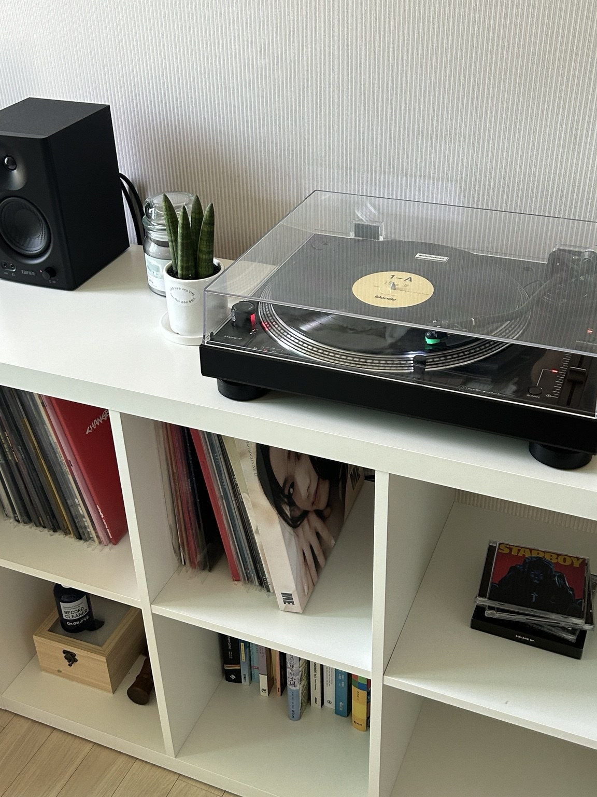

01
적응력 & 친화력
낯선 환경에서도 먼저 적응하려고 합니다.
상황 6~9살 미국 유학 초기, 영어를 잘하지 못해 학교생활에 적응하기 어려웠습니다.
행동 학교에서 진행하는 1:1 외국인 보충수업을 수강하며 영어를 익혔습니다.
결과3개월 만에 영어를 익히고 어린이 축구단에서 활동했습니다.
PERSONAL PORTFOLIO / 2026
미국 유학 경험과 음악에 대한 취향, 그리고 다시 앞으로 나아가는 회복 탄력성을 가진 사람입니다.
01 — 03
내가 실제로 겪고, 행동하고, 계속 이어가고 있는 것들입니다.
낯선 환경에서도 먼저 적응하려고 합니다.
상황 6~9살 미국 유학 초기, 영어를 잘하지 못해 학교생활에 적응하기 어려웠습니다.
행동 학교에서 진행하는 1:1 외국인 보충수업을 수강하며 영어를 익혔습니다.
좋아하는 음악은 직접 소장하는 편입니다.
상황 좋아하는 음악을 물리적으로 소장하는 매력에 빠졌습니다.
행동 식당 주방에서 직접 일하며 LP와 턴테이블을 살 자금을 모았습니다.
멈추더라도 다시 앞으로 나아갑니다.
상황 군 복무 중 왼팔 골절 부상으로 요리사의 꿈에 대한 슬럼프를 겪었습니다.
행동 재수술 후 영어 공부와 주 4회 헬스 운동을 지속했습니다.
2026년 재수술 성공 후 조급함을 버린 채, 대학교 복학 전 꾸준한 운동과 다양한 경험을 위해 IT/AI 교육 과정을 이수 중에 있습니다.
MUSIC / MY SPACE

내가 모은 LP와 턴테이블입니다. 음악을 듣는 것에서 끝내지 않고, 좋아하는 것을 직접 모으고 오래 즐기는 취향을 보여주는 공간입니다.
PRIVATE / PASSKEY ONLY
여기부터는 비공개입니다. 등록해 둔 패스키로 로그인해야 열립니다. 실제 개인정보는 없고, 확인용으로 만들어 넣은 내용입니다.
🔒 지금은 잠겨 있습니다.